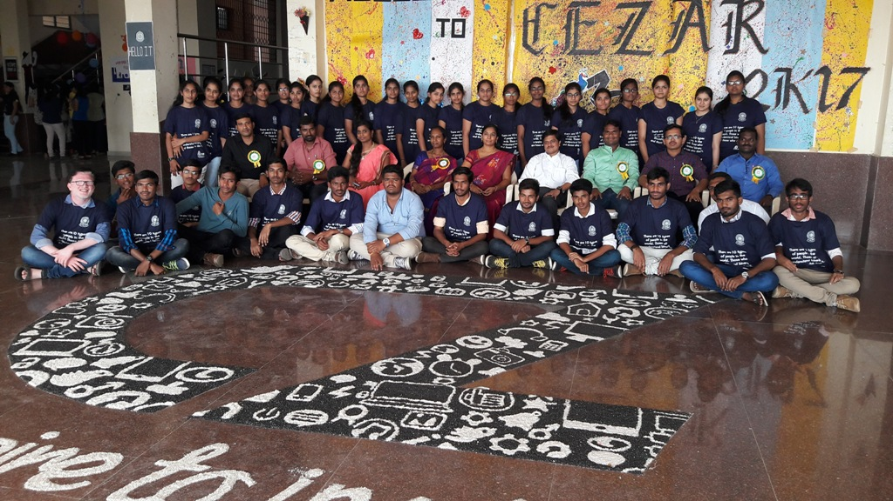
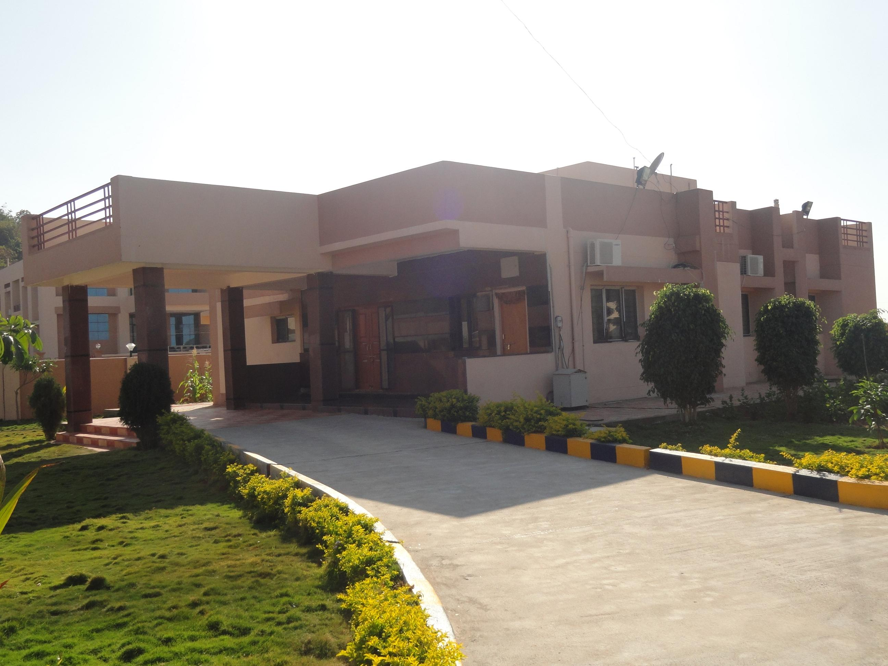

JNTUHCEJ
JNTUHCEJ
JAWAHARLAL NEHRU TECHNOLOGICAL UNIVERSITY HYDERABAD UNIVERSITY COLLEGE OF ENGINEERING JAGTIAL ( AUTONOMOUS ) Nachupally (Kondagattu), Kodimial Mandal,Jagtial Dist.Telangana - 505 501 (A constituent college of JNTUH – Hyderabad & Approved by AICTE, New Delhi) (Recognised by UGC under section 2(f) & 12(B) of UGC Act 1956) Accredited by NBA (Accredited Programmes - UG : EEE, ME, CSE ) | An Autonomous Institution and ACCREDITED BY NAAC WITH 'A+' GRADE
 IT"Emphasis of Information Technologycurriculum is onComputer Science,Software Development, Networking, Communication, Web Engineering, Security, Hardware Design and Management." bullet Information Technology department has developed the State-of-the-art laboratories in the various fields of computer engineering. bbullet Department of information TechnologyComputer Science was established in the college in 2007 with bachelor degree in Information Technology was started with an intake of 60. The PG course(M.Tech Information Technology) started in the year 2011 with 18 intake. bbullet Information Technology department has 1 Professor, 2 Assistant Professors and 9 Assistant Professor(C).Placements bbullet The area of Expertise/Research include Image Processing, Artificial Intelligence, Machine Learning, Data Science, Networking Systems and Security and Software Engineering, . bbullet Department has 300+ state of the art computers.students There are 3 well established laboratories with high end servers and UPS.
 CSEThe Department of Computer Science and Engineering was established in the year 2007 with an intake of 60 students in B.Tech program and 18 students in M.Tech program in the year 2012. The Department has state of the art infrastructure and computing equipment supported by high speed internet and wireless networks. The Department has been maintaining high standards in imparting quality education in Computer Science. The faculty in the department consists of Six Professors, two Associate Professors and five Assistant Professors (C) out of which Six are completed Ph.D and Two are pursuing Ph.D. Our faculty aims at delivering top class education blending their rich research experience with classroom teaching.Placements The major areas of research include Image Processing, Real time operating Systems, Neural Networks, Data mining, Information retrieval and Web mining, Information Security, Networks, Operating Systems, Distributed Systems, Parallel processing and Human-Computer Interactions.
 ECE
ECE
"The vicitity of Electronics and communication proliferated to most applications resembling fabrication of ICs, digital signal processin, VLSI, Embedded Systems, MATLAB, communication systems and Microwave and Radar system. The Electronics communication Engineering in conjunnction with Mechanical Engineering lays emphasis on deep understanding of 'Mechatronics'." bbullet Department of Electronics and Communication Engineering was established in the college in 2007 with bachelor degree in Electronics and Communication Engineering was started with an intake of 60.We have common laboratories and a department library with reference books. bbullet Electronics and Communication Engineering department has developed Slate-of-art laboratories in the various fields of Electronics and Communication Engineering.seminars bbullet The department of ECE providing laboratories in various desciplines such as Electronic circuits lab, Analog & Digital communication,Microprocesors & Microcontrollers, IC & Electronic computer Aided design(E-CAD), Microwave & Optical communications lab, VLSI, Embeded systems lab and MATLAB
 EEE
EEE
The Department of Electrical and Electronics Engineering have been exceedingly outshining in the college since its inception in 2007. It has been a team of well experienced dynamic faculty and staff. With perseverance being the major trait, the adept faulty of EEE Department works rigorously, helping the students attain quality education needed for the next generation bbullet Having a very significant growth, the Department of EEE presently offers a UG program along with the PG program with specialisation in "Electrical Power Systems".placements bbullet The Department is adorned with well established labs and computational facilities to incline practical knowledge to both students as well as the researchers. The Department’s reputation is plunged in various aspects of academics, placements, sports and the all round development of a student.
MECHMechanical Engineering (ME) is the discipline of engineering that explores the natural resources of power and propulsion and materials of engineering construction through the design, development, production, installation and operation of power plants, transport equipments and industrial plants besides the organization and administration of such plants." The Department of Mechanical Engineering (ME) has started in 2007 with intake of 60 in UG and has been adding feathers in its cap every year with both curricular and non curricular activities. The department started its PG program in Engineering Design in the year 2011 with an intake of 18 and sponsored seats of 6. The Department of Mechanical Engineering is accredited by National Board of Accreditation (NBA) in the year 2019. It has 13 MOU’s with noteworthy organizations for Training, Skill development and Placements. The Department is having 13 Teaching staff,flash mod video 15 Non-teaching staff. The Faculty members in the department have written more than 20 text books and have enthusiastic supervision for research. Presently, about 20 scholars are working in various advanced fields of Mechanical Engineering and already produced 6 PhDs. The Faculty Members of the department have published several technical papers in National and Inter-national Journals and conducting National seminars and conferencesplacements The Department has state of art laboratories such as Engineering workshop, Production Technology, Thermal Engineering, Heat & Mass transfer, Metrology, Machine tools, Metallurgy & Material science, Instrumentation, Fluid Mechanics & Hydraulics Machinery labs and CAD/CAM labs. The students of the department are exposed to the practical and industrial aspects of the subjects through laboratory works, industrial visits, internship training regularly. The Department is imparting practical knowledge in Automobile, Refrigeration, Air conditioning and other relevant areas under Re-Engineering and Reverse Engineering centre.